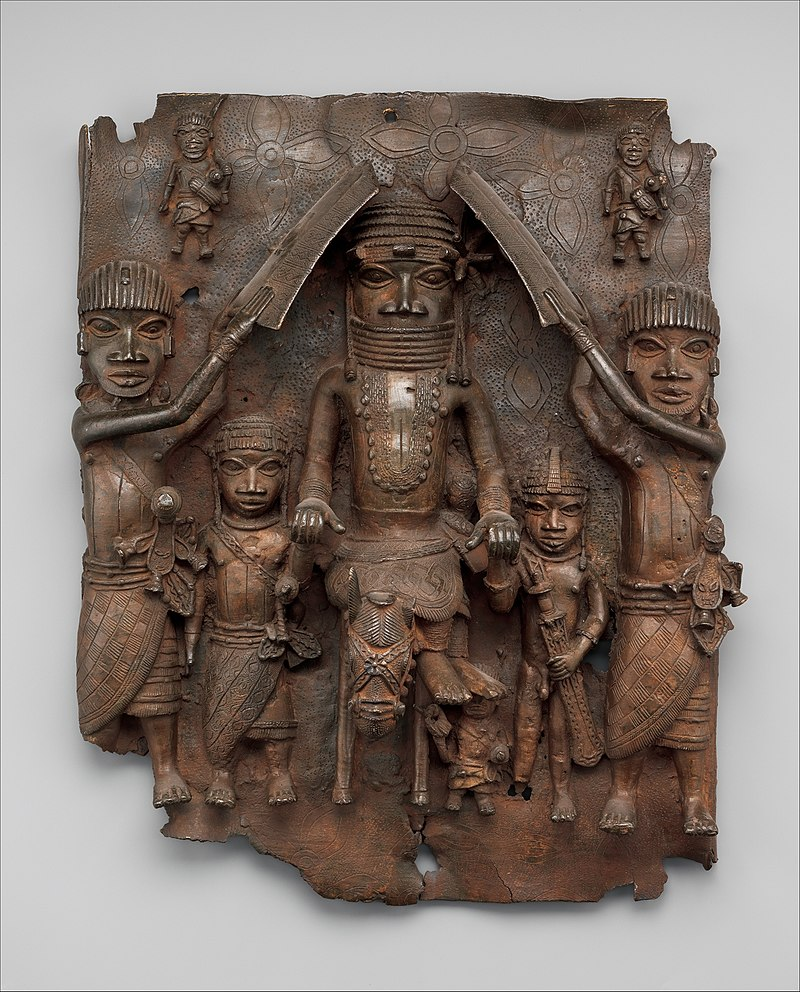

Dennis worid art
Our purpose is to provide accessible and engaging information, answers,
and assistance across a wide range of topics, catering to the needs and
curiosities of individuals, businesses, and organizations alike. We
aim to empower our users with knowledge and support, making information
readily available and comprehensible."
Bini Festac
The original mask, believed to symbolize Queen Idia, the mother of Oba Esigie, who
reigned in the 16th century, held a profound significance in the cultural and
religious practices of the Benin Obas. It served as a pendant worn during the
solemn Igue religious ceremonies and the Emobo rituals, both dedicated to purging
malevolent spirits. Additionally, it is likely that the mask played a role in
memorial ceremonies honoring the ruler's mother.
.jpg)
Coronation of Oba of bini
The Oba's role as the guardian of Edo culture is multifaceted. They are the
chief preserver of oral history, legends, and customs, ensuring that the rich
heritage of the Edo people is passed down through the generations. The Oba also
serves as a symbol of unity, representing the shared identity of the Edo people,
regardless of their diverse backgrounds and beliefs. In addition to
their cultural duties, the Oba plays a significant role in local
governance and dispute resolution. They are considered the ultimate
authority, and their decisions are binding. The Oba also wields
considerable influence in community development and acts as a
between the people and the government.The Coronation Ceremony
< Wooden Mask represent Africa Spirit
African masks are not just artistic creations; they are windows into the diverse
cultures, traditions, and beliefs of the continent. Among the wide array of African
masks, one of the most captivating and prevalent motifs is the representation of a
woman's face. These masks, often based on a specific culture's ideal of feminine
beauty, transcend their aesthetic appeal to reveal profound insights into the roles,
values, and spiritual significance of women in African societies.